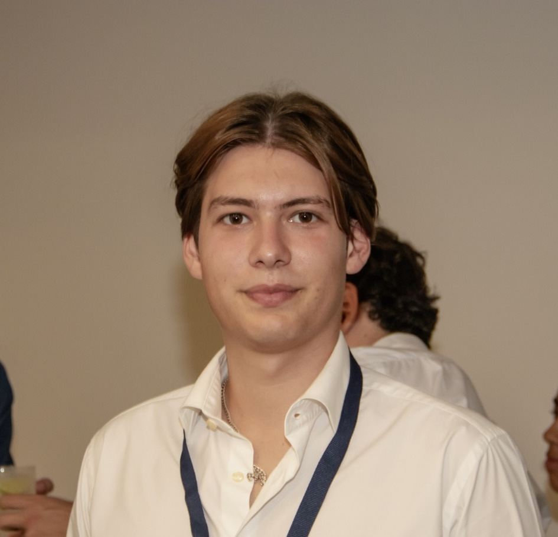
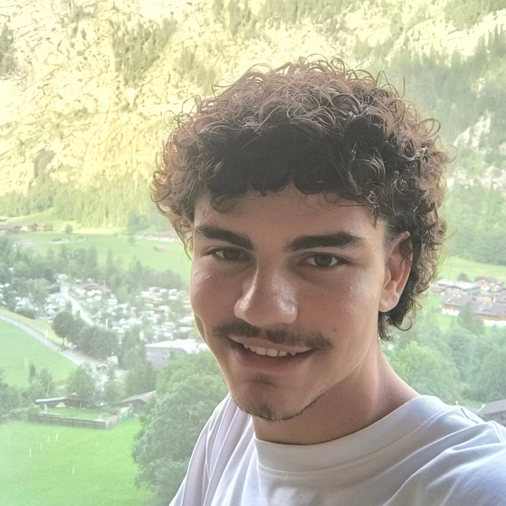

A Nossa Equipa
5 estudantes de Engenharia de Computadores e Informática — UA, 2025/26.
Guilherme Tavares
Membro da Equipa

Pedro Laredo
Membro da Equipa
João Abrunhosa
Membro da Equipa

Rafael Soares
Membro da Equipa
Tomás Cruz
Membro da Equipa